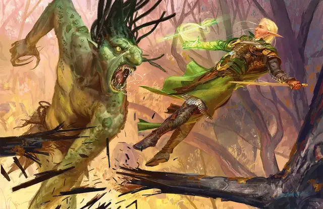

Мельфова кислотная стрела
Melf's Acid Arrow
2 уровень, Воплощение

Время сотворения 1 действие
Дистанция 90 футов
Компоненты В, С, М (порошок из листьев ревеня и желудок гадюки)
Длительность Мгновенная
Классы Волшебник
Подклассы круг земли (друид), алхимик (изобретатель)
К цели, находящейся в пределах дистанции, устремляется мерцающая зелёная стрела, разлетающаяся кислотными брызгами. Совершите по цели дальнобойную атаку заклинанием. При попадании цель получает единовременно 4к4 урона кислотой и 2к4 урона кислотой в конце своего следующего хода. При промахе стрела немного задевает цель и наносит половину единовременного урона, а в конце своего следующего хода цель урона не получает.
На больших уровнях. Если вы накладываете это заклинание, используя ячейку 3-го уровня или выше, урон (и единовременный и последующий) увеличивается на 1к4 за каждый уровень ячейки выше второго.